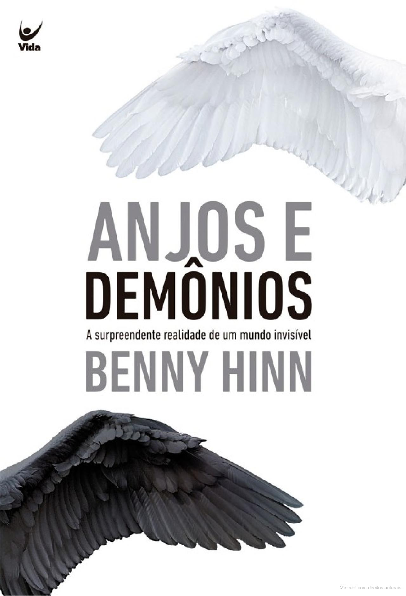

Estante de Livros da Nataniely
Sua biblioteca a um clique de distancia.
Entre dois amores
Sínopse
Todos os personagens são [...] humanos e verdadeiros.
The New York Times
Entre dois amores é uma ambiciosa e surpreendente história sentimental [...].
The Observer
Vernon Deyre é um músico sensível e brilhante, um gênio. Mas tudo na vida tem um preço. Neste caso, sua família e as duas mulheres de sua vida é que terão que pagar caro por seu talento. Definitivamente, a infância na bela propriedade da família não preparou Vernon para a dura realidade da vida adulta. E para compor sua grande obra-prima, ele terá de tomar uma decisão crucial, sem tempo para pensar nas consequências...
Fonte: Editor
Fonte: Google Books
| Data da primeira publicação: |
Autor: |
Idioma original: |
Gêneros(s): |
| 15 de abril de 2014 |
Agatha Christie |
Português |
Romance de amor |
O reino silencioso
Sínopse
Baseado nas lendas celtas do mundo Sidhe, Isabela Santos traz a história de Halina, uma garota que vive em um país onde o rei austero odeia os humanos e os trata com inferioridade e repressão. A jovem de dezoito anos, conhecida como a garota da capa vermelha por transgredir as leis do rei Danis, se torna um alvo da corte e acaba sendo capturada. O que ela não esperava era descobrir que possui poderes e talvez possa encontrar armas para destronar Danis e entregar a justiça desejada às vítimas do atual rei de Italan. Disposta a enfrentar o sofrimento de viver entre feéricos para existir um pouco mais, a garota busca uma solução para os problemas de seu país e para encontrar as respostas de sua verdadeira história entre as fadas.
Fonte:Google Books
| Data da primeira publicação: |
Autor: |
Idioma original: |
Gêneros(s): |
| 26 de setembro de 2022 |
Isabela Santos |
Português |
Literatura fantástica |
A noite das bruxas
Sínopse
Era a vez da viúva Rowena Drake ser a anfitriã da tradicional festa de Halloween do vilarejo. Durante os preparativos, Joyce, uma irrequieta menina de treze anos, gaba-se por já ter testemunhado um assassinato. Ninguém lhe dá ouvidos e tudo transcorre bem em meio a brincadeiras do dia das bruxas, até que um crime interrompe a diversão.
Hercule Poirot prepara-se para uma noite entediante quando é surpreendido por uma ligação aflita de sua velha amiga e escritora de livros policiais Ariadne Oliver, convicta de que só ele poderia desvendar esse mistério antes que um novo crime aconteça... Publicado em 1969, A noite das bruxas é um romance da maturidade de Agatha Christie e uma das últimas obras escritas pela Rainha do Crime.
" Um estrondoso sucesso. Um triunfo para Hercule Poirot."
Fonte: Google Books
| Data da primeira publicação: |
Autor: |
Idioma original: |
Gêneros(s): |
| 15 novembro de 1969 |
Agatha Christie |
Inglês |
Romance, Mistério, Ficção policial, História de detetives, Cozies, Policial processual, Romance policial histórico |
Anjos e Demônios:A surpreendente realidade de um mundo invisível

Sínopse
Neste livro, repletos de fatos, você deparará com duas forças que mais operam no mundo: anjos e demônios. Não são frutos de nossa imaginação, mas são reais neste exato momento. Uma jornada inesquecível no mundo espiritual do bem e do mal. Neste livro, repletos de fatos, você deparará com duas forças que mais operam no mundo: anjos e demônios. Não são frutos de nossa imaginação, mas são reais neste exato momento. Você descobrirá: Sete fatos específicos que precisa saber sobre os seres angelicais; A forma e função dos serafins e querubins; O mundo dos zoa — "seres viventes"; A missão dos anjos hoje; A evidência bíblica de que os anjos eram pais dos gigantes do Antigo Testamento; Os sete métodos tortuosos usados pelos demônios para ter entrada na vida de uma pessoa; Os doze espíritos demoníacos do "homem forte" mencionados na Bíblia — e como vencêlos; O papel dos anjos e demônios no fim dos tempos. Benny Hinn afirma: "Estou empolgado por você ter escolhido ler este livro. Ele é o resultado de mais de trinta anos de estudo sobre esse assunto e, para mim, foi transformador de vida. Creio que você também será transformado".
Fonte:Google Books
| Data da primeira publicação: |
Autor: |
Idioma original: |
Gêneros(s): |
| 29 de julho de 2021 |
Benny Hinn |
Português |
Literatura cristã |
A Bela e a Fera
Sínopse
LIVRO OFICIAL DO NOVO FILME Bela deseja para sua vida muito mais do que a pequena cidade provinciana de Villeneuve pode oferecer. Lá, ela se destaca da multidão com um ponto de vista único, uma independência vigorosa e um notável amor pelos livros. Ela anseia por viagens e aventuras, e por uma vida tão empolgante quanto as histórias que lê, mas, quando seu amado pai é aprisionado por uma fera em um castelo encantado, o destino de Bela muda para sempre. Ao arriscar sua liberdade e seu futuro, ela assume o lugar do pai, jurando-lhe que escaparia em segredo. No entanto, conforme aprende mais sobre a Fera e seu misterioso castelo, Bela descobre que pode haver mais sobre a história dele – e sobre a sua própria – do que ela jamais poderia ter imaginado.
Fonte: Google Books
| Data da primeira publicação: |
Autor: |
Idioma original: |
Gêneros(s): |
| 27 de março de 2017 |
Elizabeth Rudnick |
Português |
Ficção |